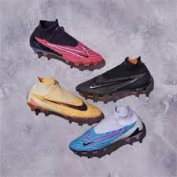

Nossas chuteiras
As chuteiras são um equipamento essencial para jogadores de futebol em todos os níveis, desde jogadores amadores até profissionais. Há uma grande variedade de modelos disponíveis no mercado, cada um com características e tecnologias específicas para atender às necessidades dos jogadores. As chuteiras modernas geralmente são construídas com materiais leves e duráveis, como couro sintético ou malha respirável, para garantir conforto e desempenho durante o jogo. Além disso, a maioria das chuteiras agora inclui tecnologias avançadas de amortecimento e suporte para ajudar a prevenir lesões. Existem diferentes tipos de chuteiras disponíveis, projetadas para diferentes tipos de campo e superfície de jogo. Chuteiras de gramado, por exemplo, são ideais para superfícies de grama natural, enquanto chuteiras de piso duro são projetadas para superfícies artificiais, como quadras de futebol de salão. Há também chuteiras de campo sintético, projetadas para oferecer tração e estabilidade em superfícies sintéticas.